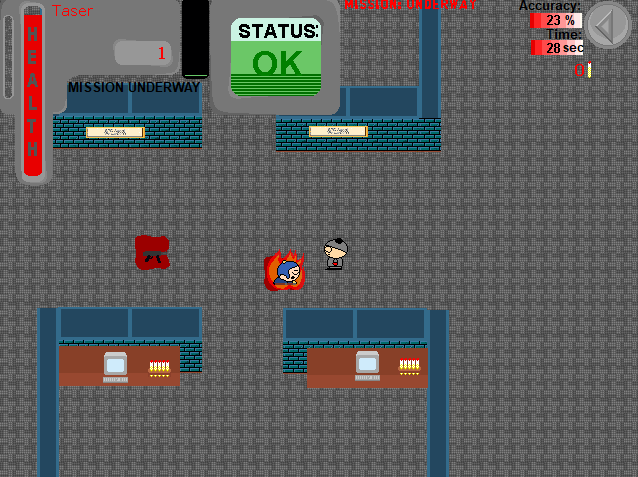
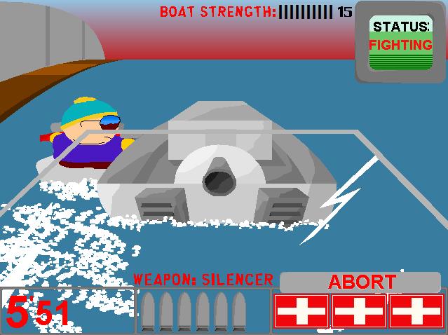

South Park Y 2 Saffron Filter
BigBonedUK
A deadly virus named "Saffron Filter" has been engineered, and poses a threat to the entire world unless someone can stop it. And Stan Marsh, the top agent from the Y institute, is just the person for the job! Armed with a selection of weapons ranging from silenced pistols and automatic rifles to grenades and the FFG, Stan must go through dozens of missions varying from stealth operations to violent bloodfests in this parody of both James Bond and Metal Gear Solid.
Downloads Direct Download - 1.31MB Internet Archive Link2024 South Park Gaming